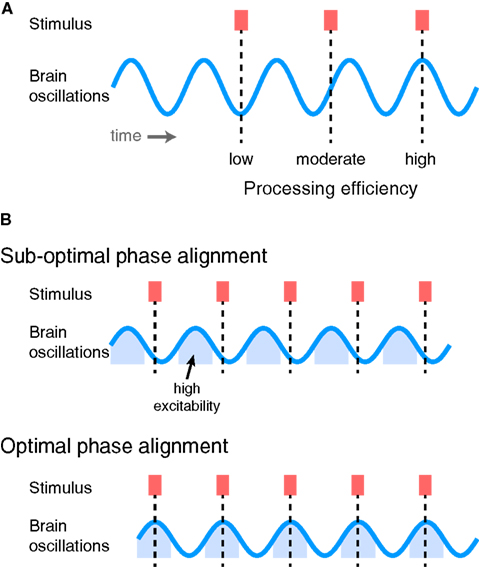
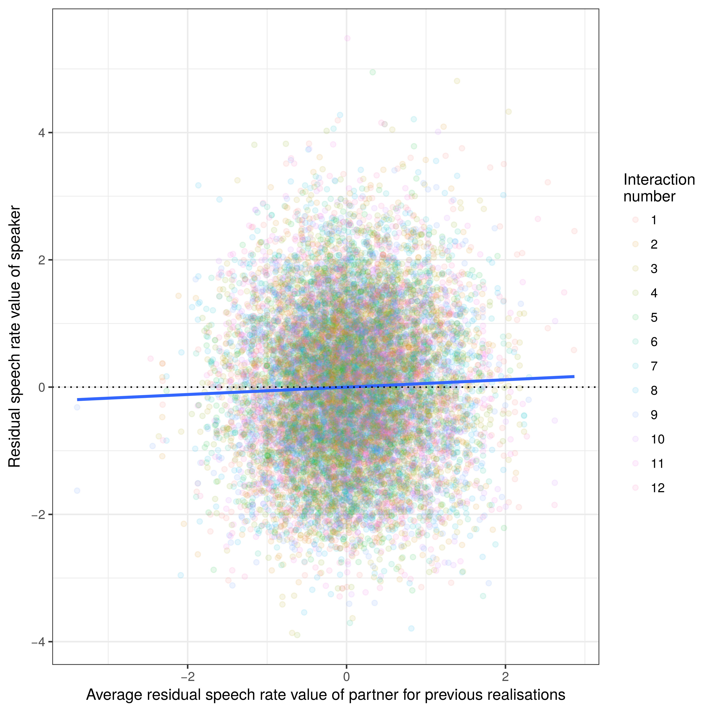
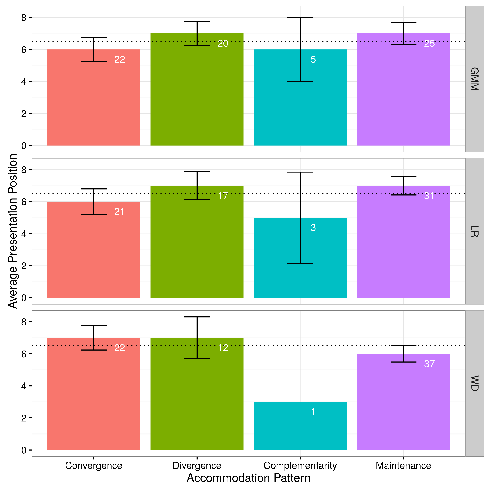
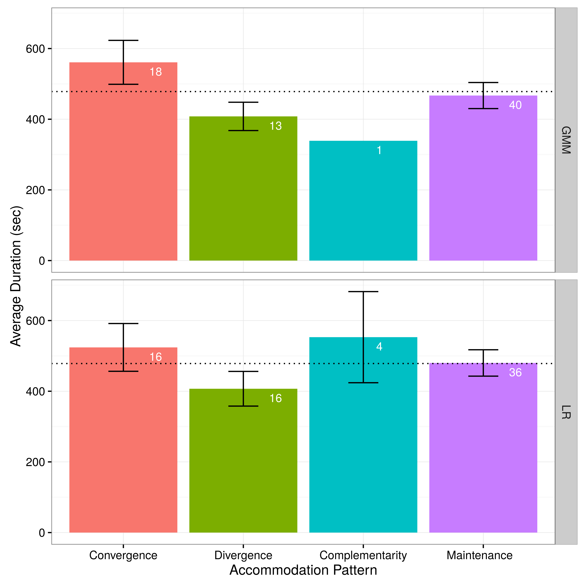

Brains in Dialogue
Investigating accommodation in live conversational speech
for both speech and EEG data
Vijay Solanki, MA(Hons)
The Aim
Main Research Question:
Is speech accommodation linked to the alignment of mental representations as accounted for through observable brain activity?
The Background
What, How, Why and How
Speech accommodation
What is accommodation?
How is accommodation measured?
Alignment of mental representations
Why should accommodation be linked to joint brain activity?
Observable brain activity
How can accommodation & brain activity be measured in tandem?
What is accommodation?
The tendency of a speaker to adjust their production of speech sounds in relation to the person (or persons) that they are speaking to
Why do we observe this phenomenon?
- Communication Accommodation Theory
Perception of the intentions and behaviours of an interlocutor influence the levels and types of accommodation
| Convergence | |||
| Divergence | |||
| Complimentarity | |||
| Maintenance |
However, findings are complex and and do not seem to follow a simple pattern
How is accommodation measured?
| Stimuli | |||
|---|---|---|---|
| Interactional | Non-Interactional | ||
| Measure | Perceptual | ||
| Acoustic-Phonetic | |||
All approaches offer insight into how accommodation operates and what its underlying mechanisms are
However, most rely on carry over effects and cannot evaluate accommodation 'in situ'
Why should accommodation be linked to joint brain activity?
The cognitive mechanisms underlying accommodation (Pardo, 2016)
- The motor theory of speech
- Direct realism
- Phonetic detail in episodic memory
- Mechanistic language use in dialogue
All assume a non-trivial link between production and perception
Neural entrainment
Neural entrainment to speech

Neural entrainment to the speech of another speaker could produce a degree of inter-speaker entrainment
This would be especially true in situations that require high levels of coordination
How can accommodation & brain activity be measured in tandem?
Hidden Markov Models (HMMS) and speech data
Markov chains


In this way, HMMs are able to characterise the general form of a continuous signal.
Extending to EEG data
There are 2 key considerations for the inclusion of EEG in this thesis:
- How to assess a continuous EEG signal for effects related to speech accommodation
- How to eliminate muscular artefacts associated with speech from the EEG signal
Consideration 1:
Unlike the speech signal, the EEG signal is much weaker and is more prone to noise
For this reason, traditional approaches average the signal over a number of trials to eliminate random noise
This is not possible for accommodation detection in a continuous setting, instead we apply HMMs
By characterising the general form of each participant's neural activity, we can look for deviations towards or away from that of their partners
Consideration 2:
A major source of noise in the EEG signal is produced by muscles in the face and neck
Traditionally, this has meant that EEG experiments have required participants to remain silent during recording
Recently, work on brain-computer-interfaces (BCI) has developed tools for recovering EEG signals during complex motor tasks
We are able to draw on this work to help minimise the noise in the EEG signal generated by speech
The Behavioural Experiment
Key questions
- Can a standard phonetic analysis approach be used to detect accommodation across a continuous interaction?
- Can an HMM based analysis approach be used to detect accommodation across a continuous interaction?
Method
Self-selection (Not reported here)
- A self-selection protocol was designed and employed to aid in maximising accommodation
Participants
- 6 female participant pairs (12 participants total)
- Aged 19 to 65 (mean 30.92)
- All born and raised in the city of Glasgow conurbation
- All have normal hearing and normal or corrected to normal vision
Task
- The DiapixUK task was used to elicit speech.
- It is a collaborative task that requires participants to work together to find a series of 12 differences between two images.

Transcription and Data Management
- An orthographic transcription was conducted on the collected data, in PRAAT
- separate transcriptions for each member of the speaker pair
- LaBB-CAT was used to store the speech and transcription data, all data were force aligned
Phonetic Analyses
- Is there a linear relationship between recent phonetic realisations of the partner and the current phonetic realisation of teh speaker?
- When the difference between partner and speaker realisations within an interaction is modelled non-linearly, is there a relationship with the presentation position?
- When the difference between partner and speaker realisations within an interaction is modelled non-linearly, is there a relationship with interaction length?
Statistical approach
Q1: Linear regression of the residuals of a linear mixed effects model of average local partner realisations against current speaker realisation
Q2: Linear regression of the GAM predicted difference in time-normalised residuals of a linear mixed effects model of average local partner realisations against current speaker realisation for presentation position
Q3: Linear regression of the GAM predicted difference in time-normalised residuals of a linear mixed effects model of average local partner realisations against current speaker realisation for interaction length
Three acoustic-phonetic features were chosen for analysis:
- VOT
- Vowel F1 & F2 values
- STRUT
- THOUGHT
- TRAP
- Speech rate
- Syllables per utterance / length of utterance
Q1 and Q2 - No support
Q3:
Q1 and Q2 - No support
Q3:
Q1:
Q2 and Q3 - No support
What do these findings suggest?
- Weak support for the detection of accommodation in a continuous interaction using acoustic-phonetic measures
- Some suggestion that accommodation may occur differently across different phonetic measures
- Context plays a role in accommodative effects
HMM Analyses
- To assess whether the HMM based approach is able to detect adaptation patterns in the speech signal.
- To determine if results from the HMM based approach are compatible with the trends suggested by the phonetic analyses.
Basic methodological approach:
- Conversion to MFCCs
Creating a holistic measure of acoustic properties
- Training of HMMs for each speaker
Creation of speaker recognition models
- Computation of likelihood ratios
Accommodation detection for specific words
- Correlation with time
Accommodation detection over time

3 types of speaker recognition models:
- Gaussian Mixture Model (GMM)
- General distribution of acoustic evidence in the feature space
- Left-Right Model (LR)
- Temporal patterning of observed acoustic eveidence
- Word Dependent Model (WD)
- Change in acoustic evidence over time
Can an HMM based approach detect adaptations in the speech signal?
| Model Type | No. Significant Cases | p |
|---|---|---|
| GMM | 57 | <10-7 |
| Left-Right | 50 | <10-7 |
| Word Dependent | 42 | <10-7 |
Yes
Do the results the results of the HMM based approach mirror those of the phonetic analyses?
|  |  |
Yes
Key findings
- Detection of accommodation during short-term, continuous interactions using acoustic-phonetic measures returns only a few small effects
- More holistic, HMM based approaches to the detection of accommodation during short-term continuous interactions are able to classify interactions by accommodation pattern
The Neural Experiment
Key questions
- Can the findings of the HMM based approach to accommodation detection presented in the behavioural experiment be replicated?
- Is an HMM based approach able to detect shifting trends in brain activity patterns relative to an interlocutor?
- Is there a relationship between speech accommodation patterns and brain activity patterns between speakers?
Method
The same as for the behavioural experiment, except for the following two things:
- The exclusion of the self-selection protocol
- The application of EEG caps and collection of EEG data
Participants
- 6 female participant pairs (12 participants total)
- Aged 20 to 65 (mean 36.33)
- All born and raised in the city of Glasgow conurbation
- All have normal hearing and normal or corrected to normal vision
Speech Analyses
Can the findings of the HMM based approach to accommodation detection presented in the behavioural experiment be replicated?
| Behavioural Exp. (speech) | Neural Exp. (speech) |
|---|---|
|
 |
Yes
EEG Analyses
Pre-processing
- Downsample to 512Hz
- Clean data with Artefact Subspace Reconstruction
- Apply PREP pipeline
- Reduce data contamination with ICA
 |
 |
Basic methodological approach for EEG signal:
- Conversion to PSD
Creating a holistic measure of neural activity frequencies
- Training of HMMs for each speaker
Creation of speaker recognition models
- Computation of likelihood ratios
EEG accommodation detection for specific words
- Correlation with time
EEG accommodation detection over time
The 3 types of EEG analysis:
- The EEG signal relating to when the participant is speaking
- The EEG signal relating to when the participant is not speaking
- The EEG signal across the entire interaction
| Neural Exp. (speech) | Neural Exp. (EEG) |
|---|---|
|
|
 |
- Is an HMM based approach able to detect shifting trends in brain activity patterns relative to an interlocutor?
- Is there a relationship between speech accommodation patterns and brain activity patterns between speakers?
Maybe
Maybe
The Conclusions
Behavioural
- Accommodation occurs across a number of acoustic features.
- Considering accommodation on a continuous basis may allow for a gap to be filled.
- An HMM based approach presents a potential solution to plugging the gap between segmental and continuous measures.
- Other behavioural influences may have been overlooked in teh past due to a lack of sensitivity
- Looking at accommodation in relation to behavioural triggers may provide novel insights into accommodation
Neural
- Further evidence for the efficacy of holistic approaches for the detection of speech accommodation is provided.
- HMM based approaches may be able to detect shifts in brain activity in relation to accommodation but improvements to the approach are needed.